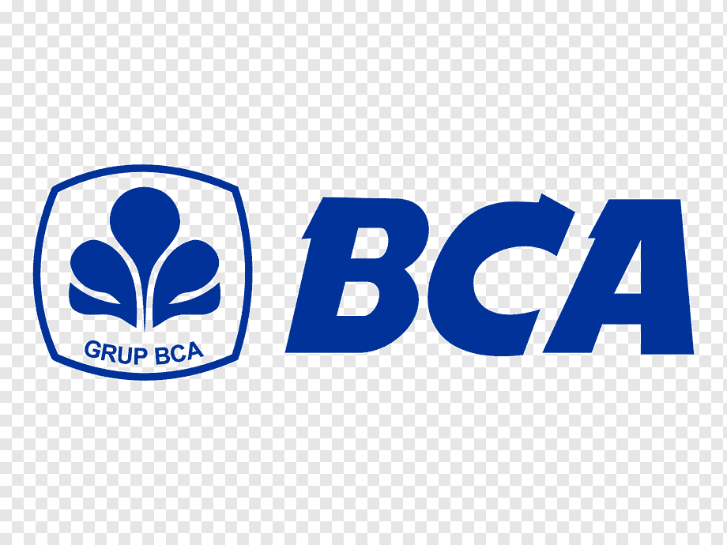

The Bank That Came Back: BCA and the Long Road from May 1998

Bank Central Asia: Indonesia's largest listed company by market capitalisation, September 2026.
In the second week of May 1998, Bank Central Asia was, by any conventional reading, finished. Riots swept Jakarta. Branches were attacked and destroyed, ATM networks were knocked out, and depositors did what depositors do when they lose confidence in a bank and a currency at the same time: they queued. A substantial share of the bank's deposit base walked out the door in a matter of days. BCA had been the largest private lender in the country. Within weeks it was a ward of the state, designated a Bank Take Over and placed under the Indonesian Bank Restructuring Agency.
The recapitalisation that followed in 1999 left the government holding 92.8 percent of the equity, exchanged against Bank Indonesia's liquidity support, with related-party loans swapped into government bonds. That is the low point worth remembering, because almost everything BCA has become since is a response to it.
The recovery was faster than anyone had a right to expect. By December 1998 third-party funds were back at pre-crisis levels, and assets had risen to Rp67.93 trillion from Rp53.36 trillion a year earlier. A bank that had just been run on ended the year larger than it began. The state then withdrew in stages: an IPO in 2000 divesting 22.5 percent, a secondary offering of 10 percent in 2001, and in 2002 a strategic private placement of 51 percent won by the Mauritius-based FarIndo Investment, the vehicle through which the Hartono family took control. Today PT Dwimuria Investama Andalan holds the majority stake.
What makes the last thirty years interesting is not the rescue but the lesson drawn from it. BCA nearly died on the funding side of the balance sheet, not the lending side. Management rebuilt the franchise accordingly, around payments, transaction banking, and the accumulation of cheap, sticky, granular deposits. Everything else was subordinated to that.
The results are visible in the numbers. As of June 2026, current and savings accounts stood at Rp1,082 trillion, roughly 84.3 percent of total third-party funds of Rp1,284 trillion. That is an extraordinary funding mix by any global standard, and it is the reason BCA has been able to lend safely at low yields and still earn well. Loans crossed Rp1,000 trillion for the first time in the same period, reaching Rp1,036 trillion, with productive lending of Rp802 trillion. Non-performing loans sat at 1.9 percent and loans at risk at 4.9 percent. The bank serves around 44 million customer accounts and clears more than 122 million transactions a day across roughly 1,270 branches and more than 20,000 ATMs.
For the 2025 financial year, BCA earned Rp57.54 trillion on total assets of Rp1,586 trillion. Return on equity was 25.1 percent in the first quarter of 2026, with a cost-to-income ratio of 27.3 percent and capital adequacy of 27.0 percent. As of August 2026 it was the largest listed company on the Indonesia Stock Exchange by market capitalisation, at around Rp790 trillion.
Quality of this kind is rare and worth naming plainly: a deposit franchise competitors cannot replicate, credit discipline sustained across two crises, and a cost base that has stayed lean while the balance sheet expanded many times over. But it would be dishonest to present the current picture as uncomplicated.
Earnings momentum has flattened. First-half 2026 net profit of Rp29.5 trillion was only marginally above the same period a year earlier. Margins have compressed, running below management's own full-year guidance range. The composition of growth explains why: loan expansion is increasingly driven by prime corporate borrowers, whose credit is exceptionally safe but whose spreads are thin and whose bargaining power is considerable, while higher-yielding consumer credit has softened. Balance-sheet growth is no longer converting proportionally into earnings.
The market has noticed. BCA's capitalisation has fallen materially from where it stood at the end of 2025, even as the underlying business has not deteriorated. That is a derating of the multiple rather than a deterioration of the franchise. But derating is what happens when a bank priced for compounding begins to look like a bank priced for safety.
There is a further, less quantifiable overhang. The 2002 divestment has resurfaced periodically in Indonesian public debate, most recently in 2025 and 2026, with claims that the bank was sold too cheaply relative to the state support it received. BCA has disputed the framing, stating that its market value at the time of the placement was around Rp10 trillion and that the Rp60 trillion of government bonds recorded on its balance sheet were fully settled in 2009. Whatever one concludes, political risk attached to ownership legitimacy is a real, if unpriceable, input.
Thirty years on, BCA has converted the worst experience a bank can have, a run, into its most durable competitive advantage. The roughly thirtyfold nominal growth in assets since 1997 flatters the achievement, given the rupiah's depreciation and cumulative inflation over the same period. It has already answered whether it can survive a shock. What remains unanswered is whether an institution optimised so completely for safety can still generate the returns that justify its price.
A disclosure is in order. BBCA sits in my own portfolio, and the reasoning is contained in everything written above. I do not believe there is a higher-quality listed business in Indonesia: not on funding structure, not on credit discipline, not on the durability of the franchise across thirty years and two crises. What changed for me is not the assessment of quality but the price attached to it. For most of the last decade, owning BCA meant paying a premium that assumed continued excellence indefinitely. After the derating of the past year, the price no longer demands heroic assumptions. I am not buying an acceleration story. I am buying the best deposit franchise in the country at a valuation that has finally stopped pricing in perfection.
This reflects my personal investment decision and perspective. It is not intended as investment advice or a recommendation to buy, sell, or hold any securities. Investing in the capital market involves significant risks, including the potential loss of capital. Each investor should conduct their own research and make decisions according to their individual risk tolerance and financial circumstances.
Bank Central Asia: emiten dengan kapitalisasi pasar terbesar di Indonesia, September 2026.
Pada pekan kedua Mei 1998, Bank Central Asia praktis sudah selesai menurut ukuran mana pun. Kerusuhan melanda Jakarta. Kantor cabang diserang dan dirusak, jaringan ATM lumpuh, dan nasabah melakukan apa yang selalu dilakukan nasabah ketika kepercayaan pada bank dan pada mata uang runtuh bersamaan: mereka mengantre. Sebagian besar dana pihak ketiga keluar hanya dalam hitungan hari. BCA yang sebelumnya merupakan bank swasta terbesar di Indonesia berubah status menjadi Bank Take Over dalam hitungan minggu, dan pengelolaannya diserahkan kepada Badan Penyehatan Perbankan Nasional.
Rekapitalisasi yang menyusul pada 1999 menempatkan pemerintah sebagai pemilik 92,8 persen saham, sebagai hasil pertukaran atas Bantuan Likuiditas Bank Indonesia, sementara kredit kepada pihak terkait ditukar dengan obligasi pemerintah. Titik terendah inilah yang perlu diingat, karena hampir seluruh bentuk BCA hari ini merupakan jawaban atas peristiwa tersebut.
Pemulihannya berlangsung jauh lebih cepat daripada yang pantas diharapkan. Pada Desember 1998, dana pihak ketiga sudah kembali ke level sebelum krisis, dan aset naik menjadi Rp67,93 triliun dari Rp53,36 triliun setahun sebelumnya. Sebuah bank yang baru saja mengalami rush justru menutup tahun dengan ukuran yang lebih besar dibanding saat tahun itu dimulai. Negara kemudian menarik diri secara bertahap: penawaran saham perdana pada 2000 melepas 22,5 persen, penawaran publik kedua pada 2001 melepas 10 persen, dan pada 2002 sebanyak 51 persen saham dilepas melalui tender strategic private placement yang dimenangkan FarIndo Investment yang berbasis di Mauritius, kendaraan yang digunakan keluarga Hartono untuk mengambil kendali. Saat ini kepemilikan mayoritas berada di tangan PT Dwimuria Investama Andalan.
Yang membuat tiga puluh tahun terakhir menarik bukan penyelamatannya, melainkan pelajaran yang ditarik darinya. BCA nyaris mati di sisi pendanaan neraca, bukan di sisi kredit. Manajemen kemudian membangun ulang franchise-nya dengan logika itu, bertumpu pada layanan pembayaran, transaction banking, dan akumulasi dana murah yang lengket dan tersebar luas. Segala hal lain ditempatkan di bawah prioritas tersebut.
Hasilnya terbaca jelas pada angka. Per Juni 2026, dana giro dan tabungan tercatat Rp1.082 triliun, atau sekitar 84,3 persen dari total dana pihak ketiga sebesar Rp1.284 triliun. Komposisi pendanaan seperti ini tergolong luar biasa menurut standar global mana pun, dan inilah alasan BCA mampu menyalurkan kredit secara aman pada imbal hasil rendah namun tetap mencetak laba yang sehat. Pada periode yang sama, kredit menembus Rp1.000 triliun untuk pertama kalinya dan mencapai Rp1.036 triliun, dengan kredit produktif sebesar Rp802 triliun. Rasio kredit bermasalah berada di 1,9 persen dan loan at risk di 4,9 persen. BCA melayani sekitar 44 juta rekening nasabah dan memproses lebih dari 122 juta transaksi setiap hari melalui sekitar 1.270 kantor cabang dan lebih dari 20 ribu ATM.
Sepanjang tahun buku 2025, BCA membukukan laba bersih Rp57,54 triliun dengan total aset Rp1.586 triliun. Imbal hasil ekuitas tercatat 25,1 persen pada kuartal pertama 2026, dengan rasio biaya terhadap pendapatan 27,3 persen dan rasio kecukupan modal 27,0 persen. Per Agustus 2026, BCA merupakan emiten dengan kapitalisasi pasar terbesar di Bursa Efek Indonesia, sekitar Rp790 triliun.
Kualitas semacam ini langka dan pantas disebut apa adanya: franchise pendanaan yang tidak bisa ditiru pesaing, disiplin kredit yang bertahan melewati dua krisis, dan struktur biaya yang tetap ramping meski neraca sudah berlipat berkali-kali. Menggambarkan kondisi hari ini tanpa komplikasi, meski begitu, akan menjadi sikap yang tidak jujur.
Momentum laba melandai. Laba bersih semester pertama 2026 sebesar Rp29,5 triliun hanya sedikit di atas capaian periode yang sama tahun sebelumnya. Margin menyempit dan berada di bawah rentang panduan manajemen untuk setahun penuh. Komposisi pertumbuhannya menjelaskan sebabnya: ekspansi kredit semakin ditopang debitur korporasi papan atas yang kualitas kreditnya sangat aman, tetapi marginnya tipis dan daya tawarnya besar, sementara kredit konsumer yang berimbal hasil lebih tinggi justru melemah. Pertumbuhan neraca tidak lagi diterjemahkan secara proporsional menjadi pertumbuhan laba.
Pasar menangkap hal itu. Kapitalisasi pasar BCA turun cukup dalam dibandingkan posisinya pada akhir 2025, padahal bisnis intinya tidak memburuk. Yang terjadi adalah penurunan valuasi, bukan penurunan kualitas franchise. Penurunan valuasi memang lazim terjadi ketika sebuah bank yang semula dihargai sebagai mesin compounding mulai terlihat sebagai bank yang dihargai karena keamanannya.
Ada satu beban lain yang lebih sulit diukur. Divestasi 2002 berulang kali muncul kembali dalam perdebatan publik di Indonesia, terakhir sepanjang 2025 dan 2026, dengan tudingan bahwa bank ini dijual terlalu murah dibandingkan dukungan negara yang pernah diterimanya. BCA membantah kerangka tersebut dan menyatakan bahwa nilai pasarnya saat private placement berlangsung berkisar Rp10 triliun, serta obligasi pemerintah senilai Rp60 triliun yang tercatat di neracanya telah diselesaikan seluruhnya pada 2009. Apa pun kesimpulan yang diambil, risiko politik yang melekat pada legitimasi kepemilikan tetap merupakan faktor nyata, sekalipun tidak bisa dihitung dalam angka.
Tiga puluh tahun berselang, BCA mengubah rush, pengalaman terburuk yang bisa dialami sebuah bank, menjadi keunggulan kompetitifnya yang paling tahan lama. Pertumbuhan aset sekitar tiga puluh kali lipat secara nominal sejak 1997 sesungguhnya membuat capaian itu tampak lebih besar dari yang sebenarnya, mengingat depresiasi rupiah dan akumulasi inflasi sepanjang periode yang sama. BCA sudah menjawab apakah ia sanggup bertahan menghadapi guncangan. Yang belum terjawab adalah apakah institusi yang dioptimalkan sedemikian rupa demi keamanan masih mampu menghasilkan imbal hasil yang sepadan dengan harganya.
Perlu saya sampaikan secara terbuka: BBCA ada di dalam portofolio saya sendiri, dan alasannya sudah termuat di seluruh uraian di atas. Saya tidak yakin ada emiten dengan kualitas lebih baik di Indonesia, baik dari sisi struktur pendanaan, disiplin kredit, maupun ketahanan franchise-nya melewati tiga puluh tahun dan dua krisis. Yang berubah bagi saya bukan penilaian atas kualitasnya, melainkan harga yang melekat padanya. Selama hampir satu dekade terakhir, memiliki BCA berarti membayar premium yang mengasumsikan keunggulan itu akan berlanjut tanpa batas. Setelah penurunan valuasi sepanjang setahun terakhir, harganya tidak lagi menuntut asumsi yang muluk. Saya tidak sedang membeli cerita akselerasi. Saya membeli franchise pendanaan terbaik di negeri ini pada valuasi yang akhirnya berhenti memperhitungkan kesempurnaan.
Tulisan ini mencerminkan keputusan dan perspektif investasi pribadi saya. Ini tidak dimaksudkan sebagai saran investasi atau rekomendasi untuk membeli, menjual, atau menahan efek apa pun. Berinvestasi di pasar modal melibatkan risiko signifikan, termasuk potensi kerugian modal. Setiap investor harus melakukan riset sendiri dan membuat keputusan sesuai toleransi risiko dan kondisi keuangan masing-masing.